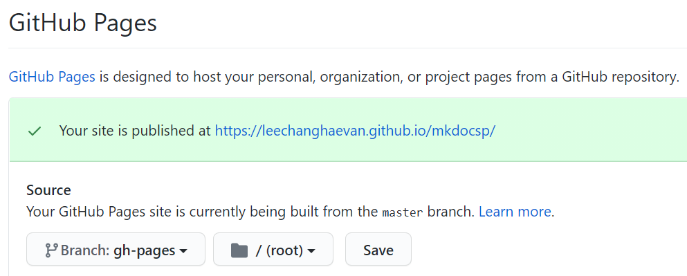

Mkdocs
개요
- mkdocs는 마크 다운 기반의 웹문서 생성기이다. 본 사이트를 만드는데 사용되었다.
- mkdocs를 설치하기 위해선 파이썬 매니저인 pip가 설치되어 있어야 한다.
사전필요
- 파이썬 설치
http://www.python.org/downloads - pip 설치
curl https://bootstrap.pypa.io/get-pip.py -o get-pip.py.
python get-pip.py. - 아나콘다로 (파이썬 + pip) 한번에 설치
https://docs.anaconda.com/anaconda/install/
설치
- pip 최신버전으로 유지
pip install --upgrade pip - mkdocs 설치
pip install mkdocs - mkdocs 버전 확인
mkdocs --version
명령어
- 새 프로젝트 만들기
mkdocs new [dir-name]+ 폴더 이동cd [dir-name] - 테스트 서버 시작
mkdocs serve(핫리로드 지원됨) - 빌드
mkdocs build - 헬프
mkdocs -h
설정 파일 (mkdocs.yml)
- 사이트 이름 설정
site_name: [내사이트] - 사이트 메뉴 설정
nav: - Home: index.md - About: about.md ...
문법
- 일반적인 마크다운 문법을 따른다.
- 이미지 연결
경로: docs/img/2020-12-29-03-05-21.png 링크: vscode에서 Ctrl+Alt+V 누르면 클립보드 이미지가 파일로 저장되면서 링크도 생성된다. (Markdown Paste 확장)
Github Pages에 배포
- 따로 build 할 필요없이 아래 명령어를 실행하면, 빌드후 자동으로 gh-pages 브랜치에 push된다.
mkdocs gh-deploy - GitHub Pages 설정에 가서 Source 브랜치를
gh-pages로 변경 
참고